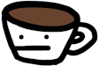
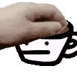
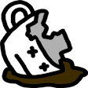
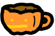
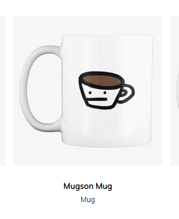

Mugson was a little character that I created (I looked, I can't find a date of when ]: unfortch) and drew for a Discord server I was in called the Chill Cafe (sic) (Formerly Dragon's Den) because I was allowed to make a wacky pog emoji called the Dernoop and when the rebrand happened I wanted to make another for the Cafe aesthetic (and maybe a mascot?). Eventually he was usurped by a new mascot (probably with a better design) called Fofi.
I made a few variants him over the years, for fun (two on the same day! The handy-dandy table is in chronological order so you know the chronology) and for a halloween sticker that was eventually, semi-reluctantly added.
| GetMuggedSon | MugsyPet | HeGotMugged | GetPumpedSon |
|---|---|---|---|
| ??? | 15/02/2021 | 15/02/2021 | 11/09/2021 |
 |
 |
 |
 |
When the server eventually made its own website, I wanted to make a little clicker game for its mascot, and so Mugson Clicker was born! (Added to the website 11th June, 2021.)
Also interesting to note, when this website was up, there was briefly a mugson cup on the store. Pretty sure nobody bought it, though.

I wish I bought it...
{kind=link}
{kind=link}